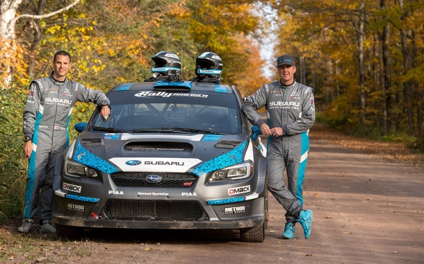
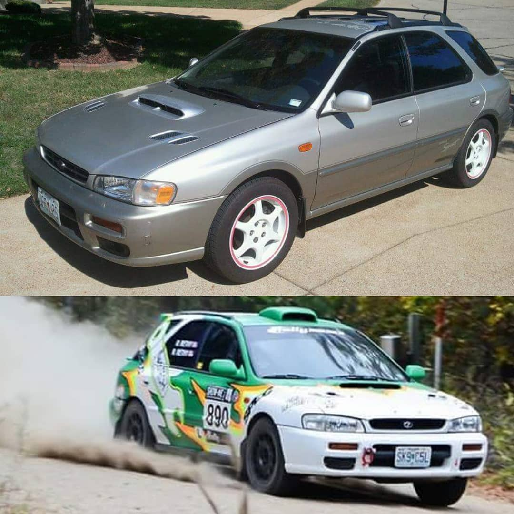
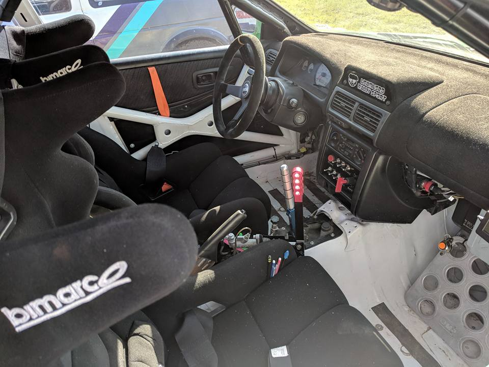
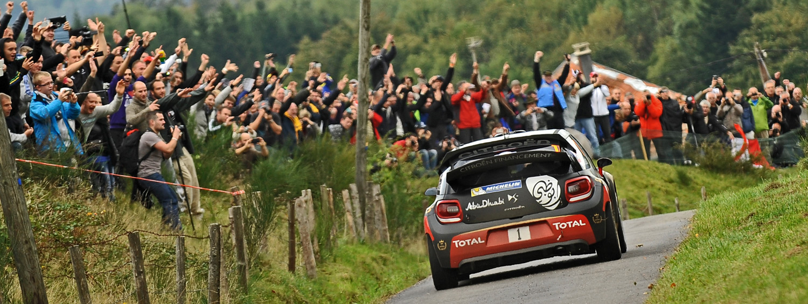
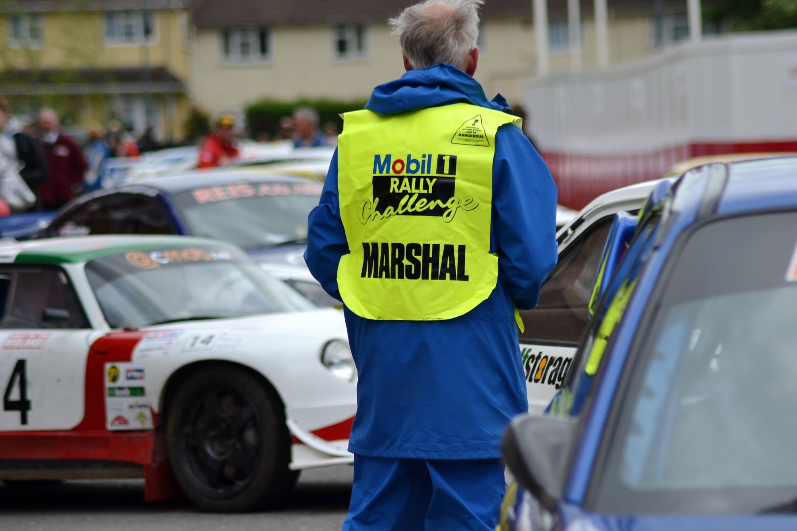

What is Rally?
Rally racing consists of two member teams, a driver and a co-driver. The job of the co-driver is to read the pace notes(turn-by-turn directions)to the driver while he/she navigates the narrow roads at high speeds. The race consists of stages (legs of the race), which are a certian number of miles long. Teams race on many different surfaces such as gravel, tarmac, sand, snow and even icy roads. The time starts ticking when the team is sent through the start of the stage and stops when they reach the finish. In between each stage the team must transit on-road to the next stage. Times are continually added up after each stage so spectators know who is leading in which class. Classes are determined by certian specifications of cars. For example whether the car is FWD, RWD, or AWD and the types of modificationss made to those cars.
What is a rally car?
Rally cars are not all that different from the cars we see on the street everyday. In fact they have to be street legal to be able to race. The major differences are that the interiors are stripped out of the car, there are no airbags, a rollcage and racing seats with a harness are added for safety, and the car is outfitted with pull-cord fire extinguishers. Other than that there is not much else needed to compete in rally besides a good set of rally tires. Obviously when you start upgrading other things such as suspension there is an added advantage, but it is not required to race.
Spectating
One of the best things about rally is that it is free to watch. You can show up on the day of the event and grab a spectator map, which shows designated viewing spots, and go watch for free. Spectating is a great way to be introduced into the sport, but can get very crowded and sometimes hard to find the ideal spot to watch.
Volunteering
If you really want the best seat in the house volunteering is the way to get up close to the action. Volunteers help make sure the road is safe for competitors and act as crowd control, making sure everyone is viewing the race in a safe manner. Another bonus to being a volunteer is that you get some free merch from the rally! To be a course marshall (volunteer) all you need to do is sign up on the event website and the organizers will take care of the rest. They will train you and set you up with team and maps on where you need to be and when. Its that easy.
